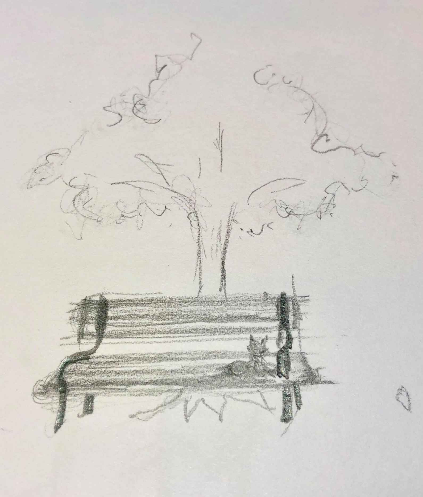

| The Beat Goes On: ビートは続く (CLOVER) | |
| 町緒 藍 | |
| kuro-ba- (2018) | |
Matio Run
ビートは続く
寒い冬の事。昨日の雪に変わりそうな雨は、すっかり上がって青い空に太陽が照っていた。雲は少し。
この町に来て１ヶ月。今日と明日は連休。起き抜けにどうしてもエスニック料理が食べたくなった。こないだまで慣れ住んでた町では、休みの日のランチはいつもエスニックだった。ＣＤを見て、洋服を見て、本を見て、街の風景の中を歩いて、友達が店員をしてる雑貨店で次のイベントの話をしたりして。
いつも通り、スマートフォンの音楽再生アプリで、好きな曲だけを集めたプレイリストをランダム再生。休みの日に流れる音楽は、仕事の日の朝とはちがった味わい。台所の棚には近くのスーパーで買ったレトルトカレーと、レンジで温めるご飯がストックしてあるけど、スマホから「I can see clearly now」って、ジャマイカの歌がかかった時に外に出ることに決めた。
「私は今、はっきりと見る事ができる。」ってね。
昼の街で、以前から目をつけていたインドカレー屋さんの、銀色の皿にのったカレーランチセットを食べる。今まで食べた中で一番のカレーだった。マトン（羊）肉は初めてかも。この赤紫のお米は何だろう。店内には、興味深い本も沢山並んでた。また来よう。見つけたお店が大当たりだった満足感。今日は良い事がありそうだ。店を出てすぐ、何の気なしに斜め向かいの洋服屋に入ったら、茶色のコーデュロイのハンチングが目に止まった。
丸い鏡の前でかぶってみたら、大きめな僕の頭にぴったりだし、店員のお洒落で可愛い女の子も「よくお似合いですよ」と褒めてくれた。僕もそう思うよ。即決で購入。値札を外してもらって寝癖を撫で付けただけの頭にかぶり、そのまま晴れた街を歩いてみた。
居心地の良いカフェを見つけて、コーヒーを二杯も飲んだ。それなりに充実した一日だったし、家に帰ってきたら読みたかった本もポストに入っていた。ハンチングをカラーボックスの上に大事に置いて、上着をイスの背もたれにかけて、暖房を入れた。食パンとソーセージだけの軽い夕食をテレビ相手に食べて、換気扇の下で煙草を吸って、ソファーに座って、さっきテーブルに置いた封筒の包装をやぶって本を開いた。
新品の本。ざっと帯と目次を読んだ。仕事関係で役立ちそうな事が書いてあったけど、なんだか今は頭に入りそうにない。窓の外を見た。マンションの間に見える赤い夕焼け。夕焼けはどこの町でも美しい。冷蔵庫に行って缶ビールを「プシュ」っと開けてソファーに戻った。今夜は満月だとニュース番組のお天気お姉さんが喋っていた。
気がついたらテレビをつけっぱなしで寝ていた。聞いたことのない会社の見たこともないＣＭ。拍手と共に始まった深夜番組では、並んだ女の子たちの前で灰色のハンチングをかぶって、大きい黒縁メガネ、蝶ネクタイの司会者が、甲高い声で今日の番組の内容を喋っていた。目をこすって、テーブルの上の食器を台所に持っていって洗い桶に沈めて、冷蔵庫からペットボトルの麦茶をコップに注いだ。テレビではアメリカに渡った野球選手が真剣な表情で生ビールを注ぎ、何人かの人と乾杯して、グラスのビールを喉に流して爽快な笑顔。僕はコップで麦茶を飲んで無理やりな笑顔。
鏡の前で、昼に手に入れた茶色いコーデュロイのハンチングをもう一度かぶってみた。クローゼットを開いて、この帽子に似合う服を選んでみた。僕的には細身でロールアップしたジーパンに、黒と緑のタータンチェックのシャツ、それにフランス軍のカーキのジャケットパーカーがベスト。それと緑と紺のラインのマフラーに、チェリーレッドの８ホールブーツで文句なし。ってか、いつもの格好にハンチングをかぶっただけ。
冷蔵庫には缶ビールが二本あるけど、明日も休みだし、ハンチングは僕に似合っている。美味しいカレー屋さんを見つけたのに、家で一人で酒を飲むような事はしたくない。さっきの野球選手のようにビールが飲みたい。このまま家に居るのはもったいない。この格好で外に出たい。歩いて、そう遠くない場所に飲屋街があった。と、思う。たしか。
街灯も少なく人通りのない道を歩く。たしかこっちの方向。満月の方向。むこうに見えるネオンの明かり。
左の方向。駅に向かう通りには、クリスマスのイルミネーションも見える。横断歩道を渡ったら、夜中の飲み屋街だった。カンは合っていた。
まだまだ人がいる。
「今んとこ、全然おもしろくねーよ」
「次、どこ行く？」
「まだ飲むん？あそこは開いとるかなぁ」
「あそこってどこ？」
「前から車きたでー！」
「分かっとーわ！」
「で、どこ？」
「あそこ。ほら、麦芽がつまみの店」
「こっちじゃなくね？あっちじゃね？」
「こっちやって！」
「俺、トイレ行きてえ」
この街の言葉。大学の運動部風の３人の男の子たちの会話。その後を歩く。はたから見たら仲間に見えているかも知れない。駐車場の前で、高いヒールの女の人を介抱する男の人が、よろけて尻もちをついたのを見た。ビルの階段からよろよろと出てきた、滑るように歩く中年のカップル。髪をぴったりとなでつけた黒いダウンの呼び込み。電柱の脇で話す若い人たち。スケートボードを持つ男の子と、飲み放題と書かれた看板をもった女の子が話している。遠くで響くクラクション。どこからかの美味しそうな匂い。赤と白のドレスに身を包んだ二人組の女性とすれ違った時の香水の匂い。いろいろな音、匂いが混じる中を歩いていた。満月の夜。この街の文化の中で、僕は一人で歩いている。
こっちに来たばかりの頃、会社の先輩に一度だけ連れてってもらったバーを探してみようと思いたった。ビルの上のほうの階にあった事だけを覚えていて、店の名前も覚えていない。７、８人が座れるカウンターがあって、奥にテーブル。赤い照明が印象に残っている。どこかで嗅いだことのあるお香の香りがした。確か、カリプソとかいうカリブ海の音楽が流れていて、やたらと帽子をかぶっている客が多かった。
マスターは多分、僕よりちょっと年上。痩せ型で白いシャツに細身の黒いネクタイ。山高帽をかぶっていて、昔の映画「時計じかけのオレンジ」のアレックス坊やみたいで、目が大きくて二重で眠そうだった。帽子から出た髪の毛は白っぽい金髪。銀髪かもしれない。照明のあたり具合では赤にも緑色にも見えた。カラーコンタクトをしているようだった。
隣に一つ空けた席の、僕と同じ歳くらいの女の子は、茶色い千鳥格子の鹿撃ち帽をかぶっていて、女版シャーロック・ホームズみたい。暖房は効いているのに黒いコートを着たまま。白いシャツの袖が見えた。緑色の瓶ビールを何か話す度に口にもっていっていた。まつげが長い。酔っているようには見えなかったので、待ち合わせか、ただ時間を潰している感じだった覚えがある。
扉を開けた時の、一斉に僕らを見る他の客の視線。
知り合いじゃないと分かると、何も起こらなかったかのように、もとの目の持ち場に戻った。
「いらっしゃいませ。おう、〇〇君（先輩の名字）」
厨房のカーテンを開けて、マスターがカウンターに二人の席を作ってくれた。オランダビールの柄のコースターと、三角の黒いプラスチックの灰皿。写真アルバムで作ったメニュー。酒、カクテルの種類が多くてよく分からない。メニューを閉じた。先輩はスコッチウイスキーをロックで、僕は鹿撃ち帽の女の子と同じ緑の瓶のビール。クラッカーにサルサソース、明太子ソース、オニオンマヨネーズのディップをのせたおつまみを出してくれた。
＊ ＊ ＊
一杯目の注文について思い出したことがある。ついこないだまでいた町の、行きつけのバーで、２年ほど前に出会った５０代中頃の男性。親愛の情を込めて、勝手に「師匠」と呼んでいたその男性に教えてもらったこと。
言葉をそのまま借りて言えば、
「河岸（かし）を変えたら、まずビール」
なのだ。河岸というのは、飲食店や飲み食いする場所、他にも遊びや稼ぎなどの場所のことらしい。
「何故一杯目にビールなのか？」
っていうことを、僕が知ってる中で一番博学な人「師匠」は、おそらく二杯目以降であろう、日本酒が注がれたお猪口を、左手で揺らしながら、丁寧に教えてくれた。
店にビールを注文すると、他のお酒より比較的に早く出てくるので、それだけ早く乾杯できる。それに、店側からしてもビール瓶を冷蔵庫から出して、栓を抜き、お盆に人数分のコップを置いて...という具合に楽なのだ。
何より、グラスとタイミングが揃った乾杯は、お店からしても、他のお客さん達からしても、自分達からしても美しい。ビールが苦手な人は乾杯の後に、同席した人と一緒に口をつけて、次に飲みたい好きな酒を頼んだら良い。
とのことらしい。生ビールの場合はどうなんだろう。今度地元に帰ったときに「師匠」の説明を聞いてみよう。
というか、この店のビールは、黒ビールかオランダのビール、二種類のビールしか無いようだった。二杯目は黒いビールを飲もう。よく待ち合わせに使っていた地元のアイリッシュパブが懐かしい。グラスは断った。
この晩、何回目かの乾杯をした。正面のモニターに映る、粘土の人形が動きまわるアニメが気になる。どうしても目を向けてしまう。隣に座る先輩は、僕にゆっくりと仕事の話しをしている。太め、いや巨漢の先輩は、息苦しいのか、しきりにネクタイを気にしている。モニターが気になる。目を持っていかれてしまう。うっすら汗をかきながら、斜め下を見て話している先輩の話に相槌を打った。
何度か相槌を打った後、モニターではエンドタイトル。先輩を見ると、目を半開きにして、頭をゆっくり前後に振っている。顎の周りの肉がワイシャツのカラーにめり込んでいる。苦しそうだ。酔っている。何か話しかけなければ眠ってしまいそう。
「ここは帽子をかぶっている人しか入れないんですか？」
先輩は、いつからかかぶっていた黒いニット帽を触って整えながら、ろれつが回ってない小声で言った。
「そうそう、あそこの帽子をかぶってない男の人は、髪の毛にそっくりな帽子をかぶっているよ。見える？ジロジロ見んなよ」笑
夜は更けていって、緊張感からか、しこたま酔っ払って、その日は引っ越したばかりのアパートの住所のメモを片手に、タクシーで帰った覚えがある。短い距離の中、無口な運転手と芳香剤の香りのきつい車内。ところどころ途切れるラジオで「月の砂漠」がかかっていて、吐き気を催した記憶がある。
＊ ＊ ＊
おぼろげな記憶を頼りに「帽子の店」を探し歩いたのだが、飲屋街ではよくある光景が続く。縦に並ぶ、ピンクや黄色のスナックの看板。漏れ聞こえるカラオケの音。公園。そうだ、飲み屋街の中に噴水のある公園があったな。ポケットに手を入れて階段に座る男女。白い猫が何かを咥えて僕の前を横切る。
店の名前を覚えてないので人に尋ねようもない。何より僕は、気軽に人に話しかけるタイプでも無い。ただただ歩く。喉が渇いたので公園の前にあるコンビニでコーラを買って一口飲み、一緒に買った安ウイスキーを入れて軽く振った。灰皿の前で煙草を深く吸って、目の前を通る人達を眺めた。厚い上着で防寒した人がほとんどだったが、たまに薄着の人もいる。カラオケの音が急に大きくなって、扉から出てきたスナックのママさんがお客さんの見送り。
「ありがとう！また来てなマサちゃん！」
「おう！また来るでー！アレの時には連絡してなー！」
アレの時って何なのだろう。
その時、僕は知らない街の中で一人で立っている事に気づいた。
美味しいカレー屋さんを見つけたのに、かっこいいハンチングを買ったのに。
ラインを送る相手もこの街には居ない。僕の名前を知っているのも会社の人くらいだ。
常連さんであろう「マサちゃん」を見送る、肩を出した紫のドレスのママさん。
寒そうに、両手の平で肩をさすって、暖かそうな扉の奥に入っていく。小さくなるカラオケの音、話し声。
ハンチングを目深にずらして煙草の火を灰皿でねじ消して、最後の煙を吐き出したつもりだったけど、身体の中の白息（しらいき）が残っていた。深く息を吸い込んで、よく澄んだ冬空の、でっかい満月に向かって白息をふきかけると、子供の頃にテレビで見た人形劇のドラゴンが、くねくねと空を飛びながら炎を吐いているシーンを思い出した。
じっとしてても、しょうがねえや。って事で、さっき感じてしまった孤独を置いて行くように、明るいコンビニを後にした。
コンビニの前の公園には大きな樹が何本もあって、所々にベンチがある。見たところ座ってる人は居ない。中程の一つを選んで座り、ウイスキー入りのコーラを飲む。急に冷たい風が吹いて木々が揺れる。

「寒い。」
思わず口から出てしまう。
「ここには座るな」って誰かに言われた気分。
昔読んだ「北風と太陽」の話。今の僕には「北風と満月」。けれど、どちらも僕のジャケットを脱がすことは出来ない。立ち上がって、さっき通って来た道の先に進む。
暗い。お店の看板は少なくて駐車場がある。エンジンがかかったままの車で暖房を入れて寝てる人が居る。ここは飲み屋街のメインの通りでは無いのかも知れない。ブルーの街灯がより寒さを感じさせる。
探している「帽子のBar」が見つからなかったら、さっき見かけた懐かしい名前「長浜ラーメン」でも食べて帰ればいいや。まだ開いてるかな。さっきの通りに戻れるかな。
今は夜中だけど、明日の夜とか夕方だったら、連れて行ってくれた先輩にも連絡が取れるだろう。どうせ会社でも会うしね。記憶をたどりながら、この通りのビルの看板を見上げて歩いている。やはりここを通るのは初めてだろう。
それにしても、あそこの道端でガードレールに座って騒いでいる若い男女を見ていたら、僕も休みの前の夜はクラブや屋台で、友達と馬鹿飲みしていたことを思い出す。
とりあえず、もう一度「帽子のBar」の記憶を呼び出してみた。思い出せた事は、マスターに、今流れているフレンチポップっぽい、古い音質の曲のタイトルを聞いたら「『私は燈台守と結婚したい』って曲」と、無愛想に言われたこと。店があるビルの前の通りで、呼び込みの兄ちゃんが居て、男二人の僕らが呼び止められていたことだった。その呼び込みの誘いを断って、僕らはビルに入り先輩がニヤニヤしてエレベーターのボタンを押したことも。
公園から伸びる通りで、まだ通ってない通りの方向に、白い息を吐きながらポケットに手を突っ込んで歩く。ビルを見上げて、看板を見る。ピンクのネオンが切れかけている。スナックが多いみたい。ピンクや黄色でカタカナの看板。赤や紫で漢字の看板。
足はアルコールのおかげで軽かったが、じきに辛くなってくるだろう。その時はどこかの居酒屋に飛び込んで、熱燗でも一杯もらう事にしよう。その前に一杯ビールを。
なんだか。それでもいい気がしてきたな。そしてラーメンでも食べて、今夜のこの街の探検は終わり...。
「どうも！遊んで行きませんか？」
元気な声の主は、黒いコートを着込んだ呼び込みの兄ちゃんである。ビルの間から、声だけが聞こえたので少し驚いた。ネオンと街灯が、その人を照らした。
上半分がフレームになってる銀縁の眼鏡をかけて、鼻の下に整った口ひげを生やし、頭は真っ黒、テカテカの整髪料でオールバック。明るい声で話かけられなかったら怖い人。地元の町から少し郊外に行った、夜中まで開いてるショッピングセンターには、こういう格好の人が沢山居た覚えがある。
あの時、声をかけてきた呼び込みの人だろうか。いや、この人じゃないな。眼鏡はかけてた気がするけど、もうちょっとだけ痩せてたかな。夜中は寒く、人通りも少ない。
「行く所あるんで、すみません。」
「そうですかぁ。またお願いします！」
案外あっさりで元気な返答。
もし、この人が知ってたらラッキーだな。
「帽子をかぶっている人のお店を知りませんか？」
僕の言葉はこっちの言葉とは、ちょっと違うアクセントがある。
「ん？どっから来たん？ちょっと分からんなぁ。どんな帽子？」
人通りも少ない。この人も退屈していたんだろう。
夜の世界に生きてる人、独特の安心感と胡散臭さがある。もうちょっと長く話したい。僕も散々に退屈してたし、コーラにウイスキーを混ぜて飲みながら徘徊している男が、人のことを胡散臭いなどと言えはしない。呼び込みの人は歳上だろうけど、僕らは退屈な仲間どうし。
さっきの質問「どんな帽子？」「どこから来た？」
メールなどでもよくあるけど、連続している質問には、どこから答えるのが正解なんだろう。
「ハット帽なんですが。来たのは福...」
「ハット帽？ハット帽って、こういうヤツ？」
どこから来たのかは彼の頭の中ではどうでも良い事だったんだろう。会話をさえぎり、手でハット帽の形を作る。まぁ、いいや。そうそう。そういう帽子。
「そこのビルの店かなぁ。何階とか、店員かどうかも分からんけど、よぉ帽子をかぶっとる気がするなぁ。」
こっちの人の言葉は、キレが無いけど人なつっこい印象を受ける。賭けてみよう。 やっぱり、僕がどこから来たのかには興味はないらしい。
「ありがとうございます。ちょっと行ってみます」
ビルの前の、店の看板が並んである前に立った。そこにはそれらしい店の名前や、それらしいデザインの看板は無かった。エレベーターに行って「上」ボタンを押したが、目の前の案内版にも無かった。しようがねぇや、諦めてラーメンでも...。と、ふり返った目の前の店の看板を見た。お洒落そうなドアだが、中では女の声で「ろくでなし」がカラオケで歌われている。男の下品な相の手が叫ばれている。マイクを通した笑い声。
エレベーターの中の案内版をもう一度見た。目の前の店の名前は案内版にも無かった。
もしかしたら。
「その店も看板を出してないのかも知れない」
と、思った。
同時に嫌な予感も頭をよぎった。この街の中から「帽子の店」を見つけ出すには、沢山のビルの中に入って、エレベーターのボタンを押して、外から扉を見てみるか、扉を開いて店の中を覗いて見なければいけない。全く違う店を開いて、酔客の興味の視線を浴びなきゃいけないし、その時の店員の誘いの言葉を断れる自信もないし、そもそも、このビルにも存在してないのかもしれない。
「無駄だ。ラーメンでも食べて、帰って寝て、明日を待とう。」
とも思ったが、呼び込みの兄ちゃんのありがたい情報もある。それに賭けた僕も居た。ものすごく遠くに来た気もして、帰るのも面倒。このビルの外観、内装、空気、カラオケの音。覚えは、あるような、無いような...。
とりあえずこのビルの最上階のボタンを押した。壊れかけたような、ガリガリしたベルの音が鳴って、エレベーターのドアは開いた。いきなり身に覚えがあるドアが目に飛び込んで来た。
白地にオレンジのクロスが描かれてあるドア。これは、まさに帽子の店。あっさり見つかった。
そういえばそうだ。先輩はエレベーターのドアが開いてすぐに、倒れ込むようにこのドアを引いて、僕を先に入らせたのだ。数ある店の中、まるで何かの力がこの店に誘い入れてくれたような気がした。
深夜 ２：３０
僕はこの店のドアの前に立っている。名前を掲げていない店。いや、横線のオレンジクロスの上に小さく黒い字で
「バー・ハイドアウト（Bar HIDEOUT）」
店の名前の横にはハット帽のマーク。間違いないだろう。
二回目のドアを開く緊張感。後に行きつけになった店のドアを、二回目に開く時には、いつもこんな緊張があった。ちょうど良いことにドアの横にはホテルのロビーにあるような灰皿が置かれていた。トリコロールカラーに塗り分けられている。 少し心を落ち着けようと、ポケットの煙草ケースから一本取り出して口にくわえる。ライターを探し、ジャケットのポケットをあさった。ない。ズボンのポケットの中にあった。しかし、煙草をくわえたまま火を着けるのを止め、目を見開いた。プレートが店のドアの前に掲げてあった。
深夜 ２：３２
そのプレートには
「CLOSED... sorry please come again.」
容易に訳せる英語。絶望はしないが残念。見つけ出すのが遅すぎたようだ。
しかし、この街の中で、この店にたどり着けただけでも奇跡。
「また休みの前の夜にでも 」
と、踵を返していると、店の中から「プチ」っという音の後に、激しいドラムの音。歪んだギターの音。まだ中には人が居る。
僕はおそるおそるドアを開いてみた。そこには一人...。
上半身裸。苦悶の表情で、爆音の中、ありもしないギターをかき鳴らしている店主の姿。僕はドアを半開きにしたまま固まってしまった。火のついてない煙草は口から床に落ちた。マスターはエアギターを持って、イスに片足を置き、頭をふって、さらに激しくエアギターをかき鳴らしている。
僕は、扉の取手を持って固まったまま。顎まで床に落ちそうだ。
とんでもないものを見てしまった。僕はそのまま固まったまま。
頭は激しく振られ、黒いシルクハットが床に落ちて、金か銀のマッシュルームヘアが見えた。マスターは落ちた帽子を気にしていない。爆音は続く。目をつむり、苦しそうに、エアギターの高音部分を弾いている。一瞬の無音部分。奥の壁に貼ってる、腰をくねらせた女のポスターに、ギターをかき鳴らす方の人差し指をつきつけた。ストップ。曲がはじまる。右手を弦にもどし、激しいビートに頭を振る。マスターの背中が見える。大きな白い羽のタトゥー。
急に振り返ったマスターは、次のブレイクで目を見開き、入り口に立つ僕を指さした。
ストップ。
爆音は続くが、二人は固まったまま...。
深夜 ３：１０
丸いバッジのついた紺色のコートに、青いタータンチェックのマフラー。シルクハットをかぶったマスターと、ハンチングの僕は、マスターの行きつけの屋台に並んで座っていた。無言で。
カウンターの一段高くなった台に何枚もの大皿。旨そうなおつまみが並んでいる。ＢＧＭは店の角に吊り下げられたブラウン管テレビの音。屋台のママさんはメガネをかけた血色の良い顔。冷蔵庫の上の箱から、おしぼりを取り出して、テレビの下、カウンター奥の端っこに座っている、先客のおじさんとの会話を、南九州弁で鮮やかに切った。僕らに温かいおしぼりを手渡し、
「今日は早いねぇ。Ｍちゃん、何にしよう」
ビール会社のロゴが印刷されたグラスを二つ、僕らに渡した。栓を抜く音。カウンターの向こうから手を伸ばし、笑顔でビール瓶を差し出した。マスターは両手をそえて、グラスをママに差し出した。
「おばばでごめんなぁ～」
ママの決まり文句なんだろう。マスターは、
「どうも」
と、軽く会釈した。マスターのグラスに綺麗な泡のビールが注がれた。
僕のほうに瓶ビールの口が向けられた。真似すれば良いのだろうか。僕は、
「すみません」
と、上司にビールを注いでもらうように、注ぎやすいように、かたむけたグラスを徐々に立てた。
お互いに軽く会釈して、小さく乾杯した。
「『みんなのうた』の時間です」
ブラウン管テレビから、真面目そうな女の人の声が聞こえた。
眠たそうな目で、ビールを一口飲んで、マスターは気だるそうに口を開いた。
「何て呼んだらいい？名前は？あだ名でもいいよ」
この町で、初めて名前を呼んでもらえたんだ。会社以外の人に。
第一章 完 ビートはつづく